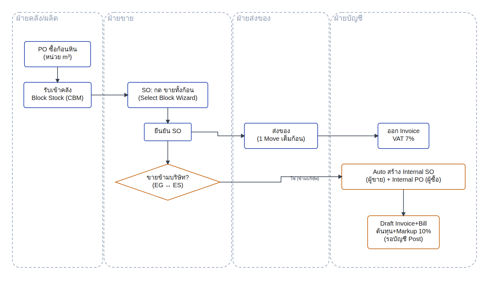
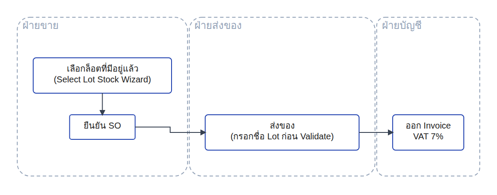
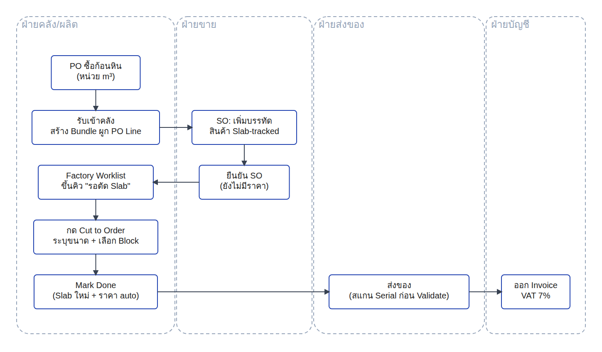
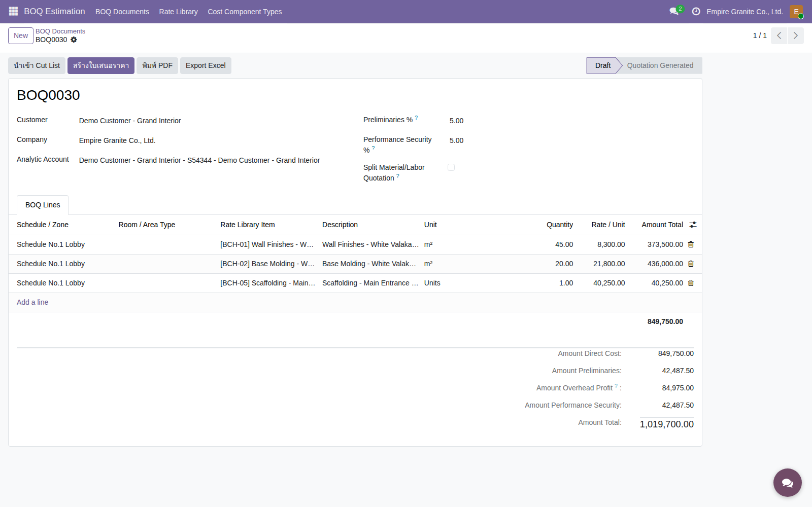
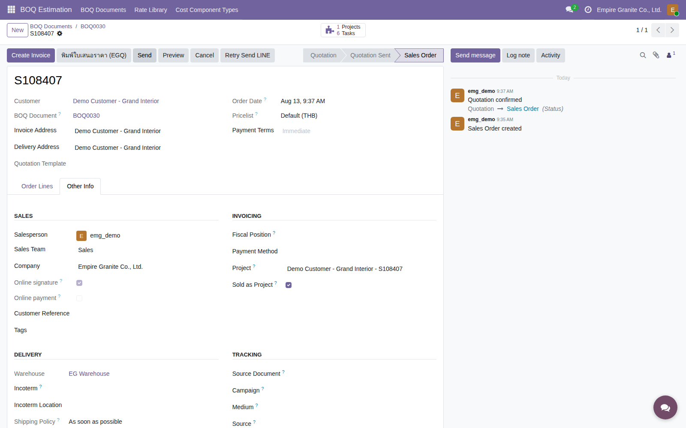
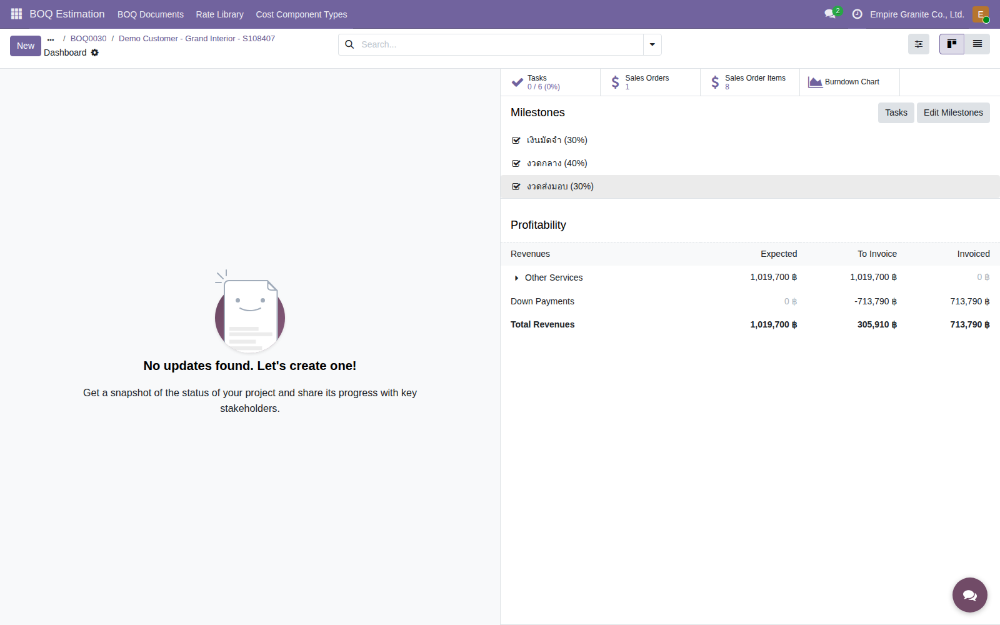

EO
Empire Granite · Stone Slab Inventory
5 โหมดการขาย
(Product Concepts)
โครงสร้างข้อมูลเดียวกันทั้งหมด (Material → Block → Slab → Finished Goods) — ต่างกันแค่ "ขายอะไร" และ "ตัดสต็อกยังไง"
EMG-O Manual · บทที่ 13 · รวม Product Concepts ฉบับเต็ม+ย่อ+FG Production (ADR-029) เป็นไฟล์เดียว · 2026-08-12
ภาพรวม · ทำไมต้องมี 5 โหมด
1 โครงสร้างข้อมูล 5 วิธีขาย ไม่ใช่ระบบแยกกันคนละชุด
?
ที่มา
หินธรรมชาติแต่ละก้อนไม่เหมือนกัน — ขนาด ลาย และคุณภาพต่างกันทุกก้อน ลูกค้าแต่ละรายก็ซื้อด้วยเหตุผลต่างกัน บางรายอยากได้ก้อนดิบไปตัดเอง บางรายอยากได้แผ่นพร้อมขายทันที บางรายอยากสั่งตัดตามขนาดที่ต้องการเอง บางรายซื้อเป็นโปรเจกต์ทั้งชุด และบางรายต้องการสินค้าสำเร็จรูปพร้อมติดตั้ง ระบบจึงออกแบบเป็น 5 วิธีขาย บนโครงสร้างข้อมูลเดียวกัน (Material → Block → Slab → Finished Goods) เพื่อให้เลือกวิธีขายที่ตรงกับลักษณะสินค้าและความต้องการของลูกค้าแต่ละราย
| # | ประเภท | ขายอะไร | ตัดสต็อกตอนไหน | ความละเอียดสต็อก | E2E |
|---|
| 1 | หินก้อนนำเข้า | ก้อนหินทั้งก้อน (m³) | ตอนขาย (ไม่ตัด) | ทั้งก้อน ไม่แบ่งขาย | ดูจริง → |
| 2 | แผ่นหินสำเร็จรูป | แผ่นที่ตัดสำรองไว้แล้ว | ตัดล่วงหน้า เก็บรอขาย | แพง=รายแผ่น(Serial) / ถูก=รวมล็อต(ตร.ม.) | หินแพง →
หินถูก → |
| 3 | ตัดตามสั่ง (Cut-to-Order) | แผ่นที่ยังไม่มีอยู่จริง | ตัดหลังยืนยัน SO (ผ่าน MRP) | รายแผ่น (Serial) | ดูจริง → |
| 4 | งานโครงการ (Sold-as-Project) | ชุด BOQ (วัสดุ+ค่าแรงหลายรายการ) | แล้วแต่รายการ (ผสมโหมด 1-3/5 ได้) | ติดตามระดับโครงการผ่าน Analytic Account | ดูจริง → |
| 5 | FG Production | สินค้าสำเร็จรูปตัดจาก Slab อีกที | ตัดหลังยืนยัน SO (ผ่าน MRP เหมือนกัน) | รายชิ้น (Lot การผลิต) + อาจมีเศษ/byproduct | ดูจริง → |
หลักคิดสำคัญ: โหมด 1-3 ตอบคำถาม "ขายสต็อกยังไง" โหมด 5 (FG Production) คือขั้นต่อจากโหมด 2/3 — เอา Slab ที่มีอยู่แล้ว (หรือตัดใหม่ผ่าน Cut to Order แบบเดียวกับโหมด 3 ถ้ายังไม่มี) มาผลิตต่อเป็นสินค้าสำเร็จรูปอีกที ส่วนโหมด 4 เป็นคนละมิติ — คือ "ขายเป็นชุดโครงการ" ซึ่งข้างในแต่ละบรรทัด BOQ ยังใช้กลไกโหมด 1-3/5 อยู่ดี เพียงแต่เพิ่ม Project+Gantt+Billing แบบงวดคลุมทั้งหมด
หินก้อนนำเข้า · Imported Stone Block
ขายทั้งก้อน ไม่ตัด หน่วยเป็น CBM (m³)
- 1ใช้ตอนลูกค้าต้องการวัตถุดิบไปตัดเอง (โรงงานอื่น หรือ intercompany EG↔ES)
- 2สินค้าคนละ SKU กับแผ่น (
product_id_block) แต่เป็น Material เดียวกัน — ไม่ผ่าน wizard เลือกแผ่น ใช้ flow ขายมาตรฐานของ Odoo
- 3SO line กด "Sell Whole Block" → Select Block Wizard → เลือก Block → ระบบตั้ง qty =
remaining_cbm ทั้งหมดอัตโนมัติ (ขายทั้งก้อน แบ่งขายบางส่วนไม่ได้)
ตัวอย่างจริง: Block EMG-B-0003 (Emperador Grey Light Marble) เหลือ 2.65 m³ → กด Sell Whole Block → Quantity เปลี่ยนเป็น 2.65 อัตโนมัติ → ราคารวม 2.65 × 3,500 = ฿9,275

Workflow: เลือก Block ที่มีอยู่แล้ว → ขายทั้งก้อน → ส่งของ → บัญชี (ซื้อ+รับเข้าคลังดูที่เดค Ensure Supply, ข้ามบริษัทมี Internal SO/PO auto)
แผ่นหินสำเร็จรูป · Ready-Made Slab
ตัดสำรองไว้ล่วงหน้า — แยกวิธีคุมสต็อกตามราคาหิน
- 1หินแพง (Serial ต่อแผ่น): ทุกแผ่น = 1 Lot แยกกัน ลูกค้าเลือกแผ่นจริงจากลาย/ขนาดผ่าน Select Slabs Wizard — มี scan ยืนยันตอนส่งของ
- 2หินถูก (รวมเป็นล็อต): ไม่ผูก Serial รายแผ่น สต็อกอยู่ระดับ Block (
remaining_sqmt) ขายบางส่วนได้ (Partial Quantity)
- 3
pricing_mode ตั้งที่ระดับ Material — ล็อกทันทีที่มี Block แรกเกิดขึ้น เปลี่ยนภายหลังไม่ได้
ตัวอย่างจริง 2 แบบ: หินแพง — EMG-B-0001 (5 แผ่น) ลูกค้าเลือกเฉพาะแผ่นที่ต้องการผ่าน Select Slabs · หินถูก — ขายบางส่วน 2.5 จาก 6.0 ตร.ม. ผ่าน Select Lot Stock โดยไม่ต้องซื้อยกล็อต

Workflow หินแพง (Serial) — เลือกแผ่นที่มีอยู่แล้ว → ส่งของสแกน Serial → บัญชี

Workflow หินถูก (Lot) — เลือกล็อตที่มีอยู่แล้ว → ยืนยัน SO → ส่งของ → บัญชี
ตัดตามสั่ง · Cut-to-Order (MRP)
ยังไม่มีแผ่นจริง — ลูกค้าสั่ง Finish+ขนาดเอง แล้วค่อยตัด
- 1ใช้ Odoo MRP จริง (Work Center "Stone Cutting") เหมือนกับประเภท 5 (FG Production) — ต่างจากประเภท 2 ที่ "ตัด" เป็น custom transformation ธรรมดา
- 2ต้องตั้ง Finish attribute บน Product Template (Polished/Honed/Brushed/Sandblasted/Other) ก่อนถึงจะมีตัวเลือกให้ลูกค้าสั่งจริง
- 3SO line เลือก Finish → ปุ่ม "Cut to Order" → Wizard สร้าง Manufacturing Order → Complete Cut → แผ่นใหม่พร้อม Serial Lot ตรง Finish ที่สั่งจริง
บทเรียนจากบั๊กจริง 3 ชั้น (แก้แล้ว 2026-07-19): ระบบเคยผูก "1 Block = 1 Finish เดียว" ทำให้ปุ่มหาย/wizard หาแผ่นไม่เจอ/ผลิตผิด Finish เมื่อ Block เดียวถูกสั่งตัดหลาย Finish จริง — แก้ให้เชื่อ SO line/Lot ของแต่ละแผ่นเป็นแหล่งความจริง ไม่ใช่ field เดียวบน Block

Workflow: มี Block พร้อมอยู่แล้ว → ยืนยัน SO (ยังไม่มีแผ่น) → Factory Worklist → Cut to Order → ส่งของ → บัญชี
งานโครงการ · Sold-as-Project (BOQ)
ขายเป็นชุดงาน — เพิ่ม 3 อย่างที่โหมดอื่นไม่มี
4
Concept
ทำ BOQ Document หลายรายการ ดึงราคา+ต้นทุนจากคลัง Rate Library อัตโนมัติ → กด "สร้างใบเสนอราคา" ได้ Sale Order ทันที → ติ๊ก "Sold as Project" ตอนยืนยัน ระบบสร้าง Project+Task+Milestone ให้เอง
1. Project + Gantt
1 Task ต่อ 1 บรรทัด BOQ อัตโนมัติ
2. วางบิลเป็นงวด
Down Payment 30/40/30% แยกจากส่งของจริง
3. กำไรรายโครงการ
Analytic Account รวมต้นทุน+ค่าแรงเทียบรายได้

BOQ0030 — รายการจากคลัง Rate Library พร้อม Preliminaries/Overhead/Performance Security คำนวณให้อัตโนมัติ

ติ๊ก "Sold as Project" แล้วยืนยัน SO — ระบบขึ้น Project อัตโนมัติทันที (opt-in ไม่อัตโนมัติถ้าไม่ติ๊ก)
BOQ0030 · Demo Customer - Grand Interior
ครบทุกขั้น — จาก BOQ ถึงวางบิลงวดสุดท้ายอัตโนมัติ
- 1สร้าง BOQ0030 ผูก Analytic Account เฉพาะโครงการ + ตั้ง Preliminaries 5% + Performance Security 5%
- 2เพิ่ม 3 รายการจาก Rate Library (Wall Finishes 45 ตร.ม., Base Molding 20 ตร.ม., Scaffolding 1 งาน) รวม ฿1,019,700
- 3กด "สร้างใบเสนอราคา" → S108407 → ติ๊ก Sold as Project → ยืนยัน SO → ระบบสร้าง Project DCGIS4 + 6 Tasks + Milestone 30/40/30 ให้เองทันที
- 4วางบิลงวด 1 (30%) + งวด 2 (40%) ผ่าน Down Payment Wizard → งวดสุดท้าย (30%) ระบบหักยอดที่จ่ายไปแล้วให้อัตโนมัติ → INV/2026/00019-021
| ยอดโครงการรวม (BOQ0030) | ฿1,019,700 |
| งวด 1 — เงินมัดจำ 30% | ฿305,910 |
| งวด 2 — งวดกลาง 40% | ฿407,880 |
| งวด 3 — งวดสุดท้าย 30% (หักอัตโนมัติ) | ฿305,910 |

ติ๊กครบ 3 งวดตามความคืบหน้าจริง — ตาราง Profitability อัปเดตยอด Down Payments ที่วางบิลแล้ว 713,790 บาท (2 งวดแรก) แบบเรียลไทม์
Milestone 30/40/30% ใช้ติดตามความคืบหน้างานเท่านั้น (ติ๊กเมื่องานถึงจุดนั้นจริง) — ไม่ผูกกับการวางบิล คนละกลไกกันโดยเจตนา ฝ่ายบัญชีกดวางบิลเองผ่าน Native Down Payment Invoice Wizard แยกต่างหาก
FG Production · ผลิตสินค้าสำเร็จรูปจาก Slab (ADR-029)
ตัด (หรือใช้ Slab เดิม) → ผลิตต่อเป็นสินค้าสำเร็จรูปตามแบบ
- 1ใช้เมื่อสินค้าที่ขายไม่ใช่แผ่นเปล่า แต่เป็นชิ้นงานสำเร็จรูป (เช่น Top อ่างล้างหน้าตามแบบ) ที่ต้องตัดต่อจาก Slab อีกที
- 2ต้องตั้ง FG Raw Material บน Product Template ก่อน ระบบถึงจะรู้ว่าต้องเบิก Slab จาก Material ไหน
- 3ยืนยัน SO เข้าคิว Factory Worklist เดียวกับประเภท 3 (ราคาคงที่ตั้งแต่ต้น ไม่ต้องรอตัดเหมือนแผ่นดิบ) → ฝ่ายผลิตกด "Produce FG" → Wizard auto-match Slab ที่มีอยู่แล้ว (ถ้าไม่มีให้กด "Cut to Order" ตัด Slab ดิบก่อน เหมือนโหมด 3 ทุกประการ) → ใส่ผลผลิตทุกชิ้นที่ได้จริง (ชิ้นที่ขาย + เศษที่เหลือเป็น byproduct คนละ Lot) → ยืนยัน → สร้าง Manufacturing Order จริง เบิก Slab 1 แผ่น
ต่างจากประเภท 3 ยังไง: ทั้งคู่ใช้ Odoo MRP จริงและ Factory Worklist คิวเดียวกัน — ประเภท 3 จบที่ได้ Slab ดิบพร้อมขาย (ติดตามด้วย Serial) ส่วนประเภท 5 ตัดต่ออีกขั้นเป็นสินค้าสำเร็จรูป (ติดตามด้วย Lot ไม่ใช่ Serial, ส่งของไม่ต้องสแกน)

Workflow: มี Block พร้อมอยู่แล้ว → ยืนยัน SO (ราคาคงที่) → Factory Worklist → Cut to Order → Produce FG → ส่งของ (ไม่ต้องสแกน) → บัญชี
สรุปด้านบัญชีที่ต่างกัน
ต้นทุน, VAT, จังหวะ Invoice — ต่างกันยังไงในแต่ละโหมด
| ด้านบัญชี | 1 (ก้อน) | 2 (สำเร็จรูป) | 3 (ตัดตามสั่ง) | 4 (โครงการ) | 5 (FG Production) |
|---|
| ต้นทุนอ้างอิงจาก | cost_cbm | cost_sqmt | ต้นทุนวัสดุจาก MRP เท่านั้น | รวมทุกใบที่ tag Analytic Account | ต้นทุน Slab ที่เบิกใช้ (MRP) |
| ต้นทุนค่าแรงแยกราย order? | ไม่มี | ไม่มี | ยังไม่มี (fast-follow) | มี ถ้า tag เข้า Analytic เอง | ยังไม่มี (fast-follow เหมือนโหมด 3) |
| จังหวะออก Invoice | ตอน confirm/deliver | ตอน confirm/deliver | ตอน confirm/deliver | แยกเป็นงวด ไม่รอส่งของ | ตอน confirm/deliver |
| ขายข้ามบริษัท (EG↔ES) | รองรับ (Markup 10%) | รองรับ (Markup 10%) | ยังไม่ได้ทดสอบ | รองรับต่อบรรทัดตามประเภทสินค้า | รองรับ (by design เหมือนโหมด 3) |
| ดูกำไรรวมได้ที่ | Financial Reports Dashboard | เหมือนกัน | เหมือนกัน | Analytic Items แยกรายโครงการ | P&L Dashboard แยกกลุ่ม "FG Production (ADR-029)" |
VAT 7% เหมือนกันทุกโหมด — ความต่างอยู่ที่ "ต้นทุนอ้างอิงจากไหน" กับ "จังหวะออก Invoice" เป็นหลัก
สรุปภาพรวม
1 โครงสร้างข้อมูล เลือกวิธีขายให้ตรงกับสินค้าจริง
Material → Block → Slab → Finished Goods→
เลือกโหมด 1-5→
ขาย → ส่งของ → บัญชี
| โหมด | ใช้เมื่อ | E2E |
|---|
| 1. หินก้อนนำเข้า | ขายวัตถุดิบทั้งก้อน ไม่ตัด | ดูจริง → |
| 2. แผ่นสำเร็จรูป | มีสต็อกแผ่นพร้อมขายทันที | หินแพง →
หินถูก → |
| 3. ตัดตามสั่ง | ลูกค้าเลือก Finish/ขนาดเอง | ดูจริง → |
| 4. งานโครงการ | ขายหลายรายการรวมเป็นงานเดียว ต้องดูกำไรรวม | ดูจริง → |
| 5. FG Production | มี Slab อยู่แล้ว หรือตัดใหม่ก่อน (เหมือนโหมด 3) แล้วผลิตต่อเป็นสินค้าสำเร็จรูป | ดูจริง → |
อ้างอิงจาก build+verify จริงบน production (odoo19-mbxai) · รายละเอียดทางเทคนิคเต็ม: EMG-O Manual บทที่ 13